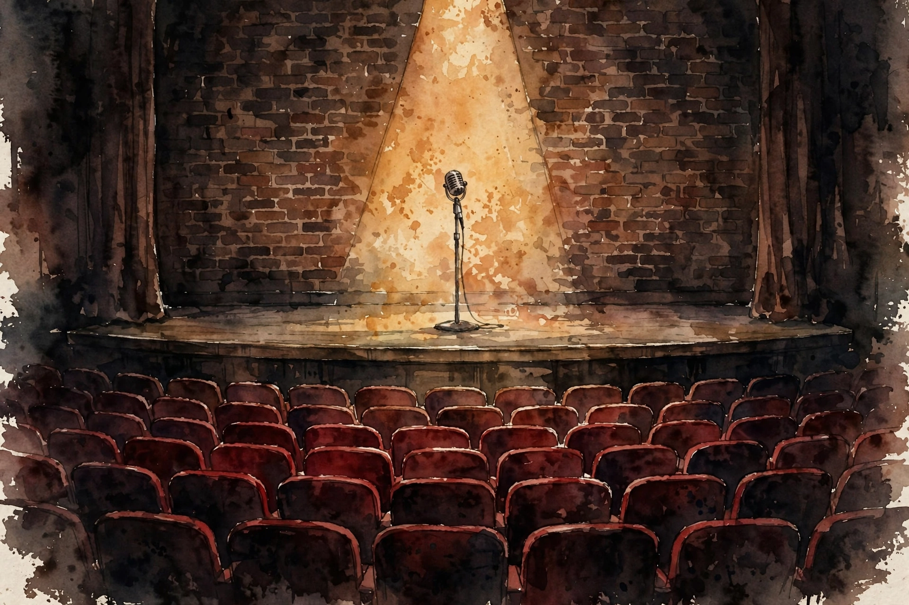

Modern Wisdom · 2023 · Episode 3 · Companion
Beauty Standards, Twitter and AI Girlfriends
A comedian and a host walk through concept creep, forced virtue, and the prestige problem of AI girlfriends. Funny on the surface, load-bearing underneath: what AI can and cannot fake.

Illustration. The moat is context: why the episode bets comedy survives the machines a while longer. AI-generated watercolor made for this page.
Watch. The official Modern Wisdom episode video. Use the chapter menu above to jump to any section of this companion as you listen.
The Wisdom Index: every nugget in this companion
Chapter 1
The tour life illusion
The episode opens on the road. Tom Segura has just finished a 300-date tour, and Normand maps the two poles of comedian travel: Segura, the disciplined athlete with a trainer at 8 a.m., and Bert Kreischer, the party animal.
Normand places himself closer to the party pole and jokes that he is worried about it. The glamour shots lie. Real tour life is airports in foreign languages, packing, hotels, and a blur like the Fight Club montage.
The ideal, both agree, is the weekend run: out Friday, back Sunday, a built-in break from your apartment, your city, and your relationship. Escape with a return ticket.
The chapter sets the episode tone. Nothing here is quite what it looks like from the outside, and that gap between image and reality becomes the theme.
Nugget 1 · Image vs reality
Distrust the highlight reel
What happened · Tour looks like jets and arenas on Instagram. It feels like logistics, exhaustion, and loneliness with applause in the middle.
Why it matters · Every industry sells the highlight version of itself. Decisions made from the highlight version misfire.
Transferable principle · Before envying a life, price the unphotographed 90 percent.
SourceInterpretation
Chapter 2
Concept creep
The first big idea arrives via a CNN piece on digital blackface: the claim that white people posting memes of Black people express strong emotion through a modern minstrelsy.
The host answers with an economic frame. When the demand for racism outstrips the supply, the definition must expand to keep the supply up. A friend gave him the term for it: concept creep.
Normand agrees and adds the career logic. A reporter who covers racism needs a daily story. Digital blackface fills the slot. The dilution is not an accident. It is inventory management.
Their joint conclusion is wry. If you must stretch this far to find racism, that stretch is itself evidence that the blatant kind has shrunk.
concept creep is when the demand for racism outstrips the supply of racism
Chris Williamson, in the episode
Nugget 2 · Concept creep
Watch for concept creep
What happened · When demand for a problem exceeds its supply, definitions stretch to manufacture more of it.
Why it matters · Stretched definitions protect careers and narratives, but they spend down the moral capital of the original concept.
Transferable principle · When a category keeps expanding, ask who needs the expansion and what it costs the category.
SourceInterpretation
Chapter 3
Forced virtue and the Dove ad
Next up is a Dove campaign for women in gaming. A superheroine sheds her armor, grows larger, and keeps fighting. The cited stat: 74 percent of girls feel unrepresented in video games.
Both hosts support the goal and distrust the execution. The ad feels contrived, and contrived virtue reads as marketing. Woke washing, in the host phrase, lets brands monetize virtue signaling while hiding less altruistic business practices.
They run the same test on Nike and Kaepernick, on Bud Light and Dylan Mulvaney. The pattern: a brand borrows a moral cause to distract from its own supply chain or to chase a trend, and the audience smells the calculation.
The deeper objection is about originality. When every brand zags the same way, the zag stops being brave and grows dull. The audience punishes boredom dressed as courage.
Nugget 3 · Forced virtue
Forced virtue backfires
What happened · Campaigns that feel focus-grouped trigger skepticism even when the underlying cause is just.
Why it matters · People can smell the difference between conviction and positioning. Positioning spends trust it did not earn.
Transferable principle · If the virtue needs a campaign, check whether the virtue or the campaign came first.
SourceInterpretation
Two numbers from the culture war
Share of respondents, per sources cited in the episode
Source: Modern Wisdom episode 3. The 74 percent figure comes from the Dove campaign discussed in the episode. The 60 percent figure is the episode’s citation of teen hopelessness data.
Chapter 4
Opinions and deeds, further apart than ever
The episode sharpest insight concerns hypocrisy at scale. On Twitter, your opinions are carved in stone and your deeds are invisible. Nobody checks how the performative ally behaves at home.
Normand notes the asymmetry cuts both ways. Genuine care also gets frisked at the door, because the audience got burned so often that it treats all virtue as positioning. That chills real altruism.
Two guest phrases nail the platform. Sam Harris calls Twitter the most malignant form of telepathy, a window into only the worst of other minds. Colin Quinn calls it giving yourself schizophrenia: eight million opinions absorbed at once.
Then the scale numbers land. Only about 10 percent of Americans even have a Twitter account, and within that slice, a tiny fraction of users produce about 95 percent of tweets. The loudest room in the country is also the least representative.
the most malignant form of telepathy ever
Sam Harris, quoted in the episode, on Twitter
Nugget 4 · Opinions vs deeds
Audit deeds, not posts
What happened · Social platforms record every stated opinion and hide every real action, so status flows to performance over practice.
Why it matters · A system that rewards stated virtue and never checks lived virtue will manufacture cynicism as a byproduct.
Transferable principle · When judging people or brands, weight what they do when nobody posts about it.
SourceInterpretation
Chapter 5
The cynicism prophylactic
How does Normand stay out of the pit? His method is post and ghost: publish, then leave. Never read the replies. His friend in Louis CK orbit goes further and blocks liberally until the noise floor drops.
He admits the method leaks. Some weeks bring sleepless nights when one comment finds the exact insecurity you already had and sets up camp in your shower thoughts.
The host counters with the long view. Michael Malice book on Russia argues the worst century in history still ended with the good guys winning, which makes hope rational even when the timeline insults you.
They also run a generational thought experiment. Someone born in 1920 got the Depression then the draft. Someone born in 1930 got the boom. Your birth year deals your hand. The current hand includes the internet, and the task is to play it rather than curse the dealer.
Nugget 5 · Post and ghost
Post and ghost
What happened · Normand publishes and leaves. He never reads replies, which starves the outrage loop of its fuel: his attention.
Why it matters · You cannot win a fight with eight million voices. You can only decline the invitation.
Transferable principle · Ship your work, then exit the arena. Attention is the prize. Stop awarding it to hecklers.
SourceInterpretation
Chapter 6
AI girlfriends and the prestige problem
The episode turns to AI companions. Amouranth, a top streamer, launched an AI version of herself that chats, answers questions, and sends voice notes to fans.
The host brings in his friend William Costello, an evolutionary psychologist. The argument: an AI girlfriend can never carry prestige, because prestige requires selection. Anyone with the price of a cheeseburger per month can subscribe, so it proves nothing.
Costello adds the white pill. AI companions may comfort the lonely without replacing real relationships, exactly because no selection took place. The lack of status is a feature: it keeps the real market intact.
Normand tests the comedy angle. A comic performed one joke he wrote and one joke AI wrote in his voice. The room could tell. His joke won by a mile, which suggests context and lived experience still separate the human from the model.
the price of a spare cheeseburger per month
Chris Williamson, in the episode, on why a subscription cannot confer status
Nugget 6 · Prestige needs selection
Prestige needs selection
What happened · Status comes from being chosen through a difficult filter. A product anyone can buy cannot confer it.
Why it matters · This is the load-bearing wall the episode finds. AI can fake beauty, attention, and conversation, but it cannot fake having picked you.
Transferable principle · When evaluating what AI threatens, ask what part of the value comes from selection. That part survives.
SourceInterpretation
The cost of misreading the room
Bud Light year-on-year sales change after the Dylan Mulvaney campaign
Source: Modern Wisdom episode 3. The episode cites a 23 percent year-on-year sales drop.
Chapter 7
What the machine cannot do yet
The closing argument is about comedy as the hard case. A joke is setup, twist, and punch, but the laugh also depends on the room, the bomb before it, and the person telling it.
Normand cites a perfect test. AI will know a joke is fully conscious, he jokes, when it walks off stage regretting the funnier thing it should have said. Regret needs a self.
The episode grants AI the middle of the labor market: thumbnail designers, middling legal work, routine radiology. Comedy survives because the audience buys the person, not just the punchline.
It ends where it began, on the road. Normand plugs his tour and his special, and the host signs off. The serious point hides inside the jokes: selection and presence are the two things no model can counterfeit.
Nugget 7 · Context is the moat
Context is the moat
What happened · A joke that kills in one room dies in another. The comedian reads the room in real time and adjusts.
Why it matters · Models optimize text. Humans optimize the moment, the relationship, and the shared history in the room.
Transferable principle · Build your moat from context: the room, the relationship, the timing. Text alone is now cheap.
SourceInterpretation
Takeaways
- Concept creep: when demand for a problem outstrips supply, definitions stretch to fill the gap.
- Forced virtue backfires. Audiences punish positioning dressed as conviction.
- Opinions and deeds have never been further apart, because platforms publish the first and hide the second.
- Post and ghost: ship the work, skip the replies, starve the outrage loop.
- Prestige requires selection. Anything anyone can buy cannot confer status, which limits what AI companions can take.
- Comedy survives on context, timing, and the person in the room. Text generation alone does not threaten it.